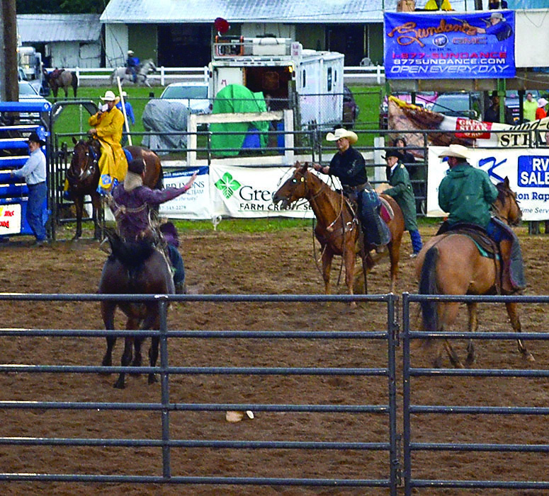
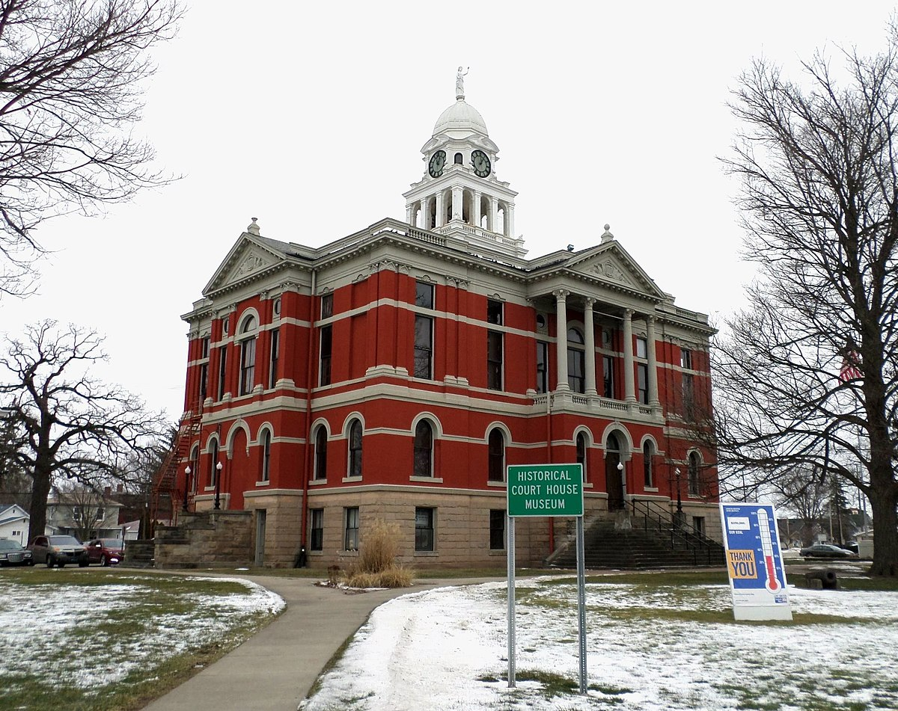

History
Originally known as Eaton Center or Carmel, Charlotte was incorporated as a village on October 12, 1863 and the first election was held on March 1, 1864. A City charter was granted by the Michigan legislature on March 29, 1871.
Since July 1, 1962, Charlotte has operated under the council-manager form of government. This government structure divides policy making and administrative functions between the city council and the city manager with the council responsible for the former and the manger responsible for the latter.

Charlotte Performing Arts Center (CPAC)
Rent out the theatre or come and enjoy a local show. The Charlotte Perfomin Arts Center is a complete professional performing theatre.

Home of Frontier Days
Come celebrate with us every year in September! Enjoy the Rodeo, food, and later the Saloon, with line-dancing and great country music.
Go Orioles!
Charlotte Public Schools is pleased to announce the formation of the Charlotte Early Middle College. Designed to provide all students opportunities to prepare for college and careers.

Eaton County Museum
In 1883, the Courthouse cornerstone was placed in the center of town square where it remains today. In 1885 the courthouse officially opened to the public. The courthouse was operational for 10 years before a fire gutted much of the inside.